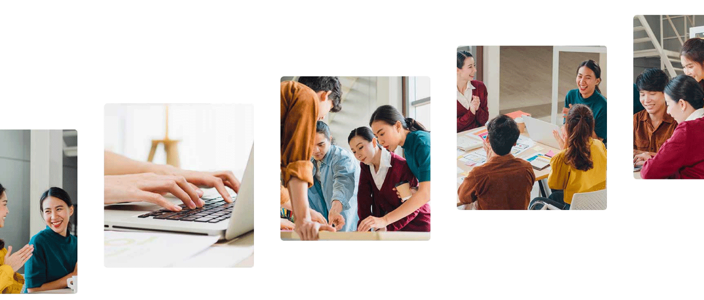

PT Nippon Indosari Corpindo Tbk. merupakan produsen roti massal yang pertama dan terbesar di Indonesia. Perseroan memproduksi ragam produk dengan merek “Sari Roti” dan “Sari Kue” yang halal, berkualitas, aman dikonsumsi dan terjangkau oleh masyarakat.
Saat ini Perseroan mengoperasikan 14 pabrik yang berlokasi strategis dengan sebaran distribusi lebih dari 78.000 titik penjualan pada kanal modern maupun kanal tradisional di seluruh Indonesia. Sejak tahun 2010 mencatatkan sahamnya di Bursa Efek Indonesia dengan kode emiten ROTI.
.jpg)
Sejarah 2019-Sekarang
Pada tahun 2019 Perseroan mendirikan entitas anak, PT Indosari Niaga Nusantara yang bergerak dalam bidang usaha perdagangan untuk memperluas sebaran distribusi. Dalam periode 3 tahun, Perseroan secara berturut-turut mengoperasian pabrik yang berlokasi di Balikpapan, Kalimantan Timur (2019), kemudian di Gresik, Jawa Timur (2019) dan disusul pabrik baru di Banjarmasin, Kalimantan Selatan (2021)
Pada tahun 2022 Perseroan meluncurkan merek "Sari Kue" sebagai kategori produk baru, dan secara bertahap meningkatkan Sistem Manajemen Keamanan Pangan ke FSSC 22000.
Saat ini Perseroan merupakan produsen roti massal yang terbesar di Indonesia dengan ragam produk yang halal, berkualitas, aman dikonsumsi dan terjangkau oleh masyarakat.
Perseroan mengoperasikan 14 pabrik yang berlokasi strategis dengan sebaran distribusi lebih dari 78.000 titik penjualan pada kanal modern maupun kanal tradisional di seluruh Indonesia.
